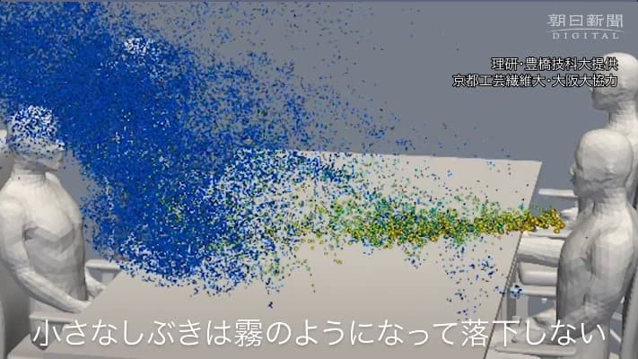
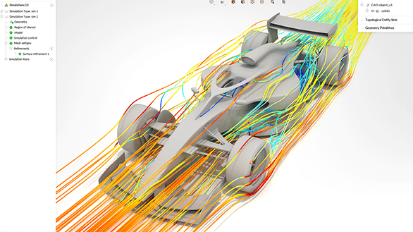
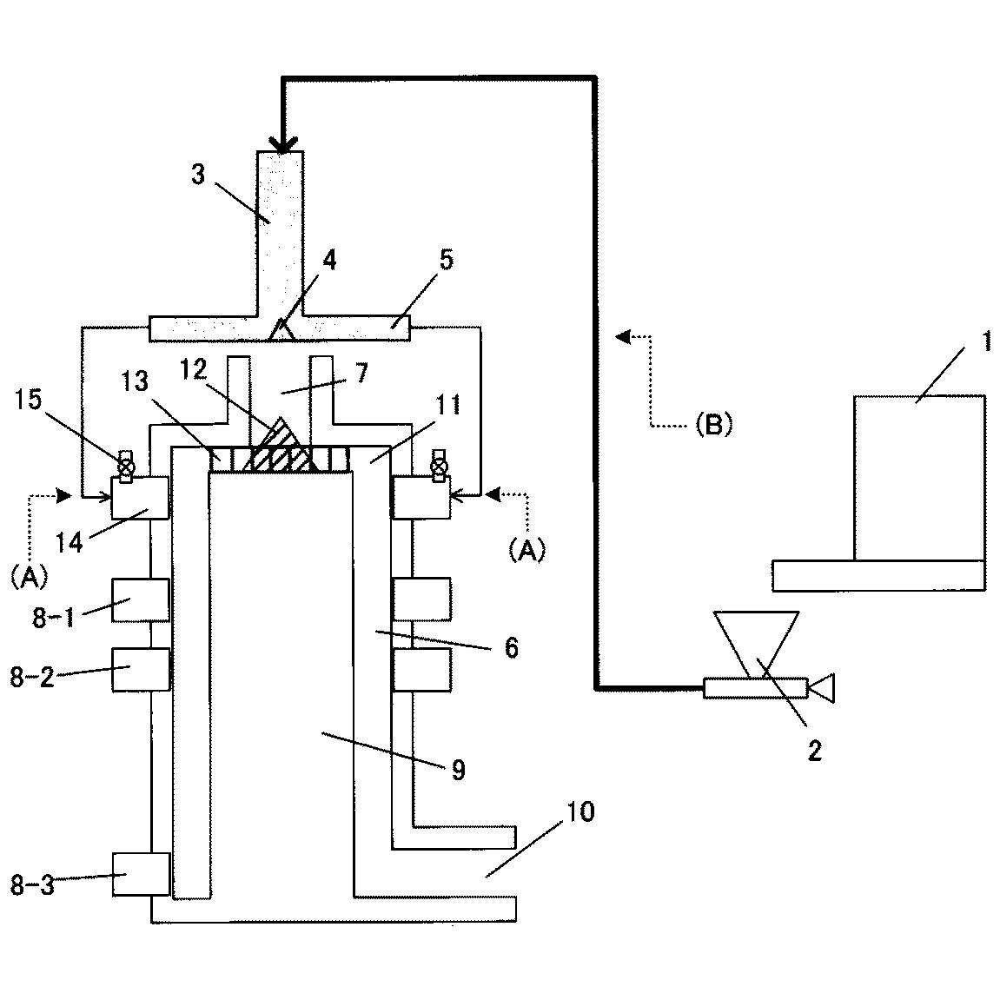
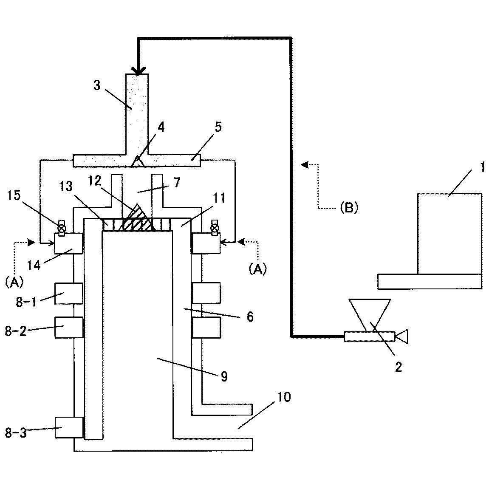
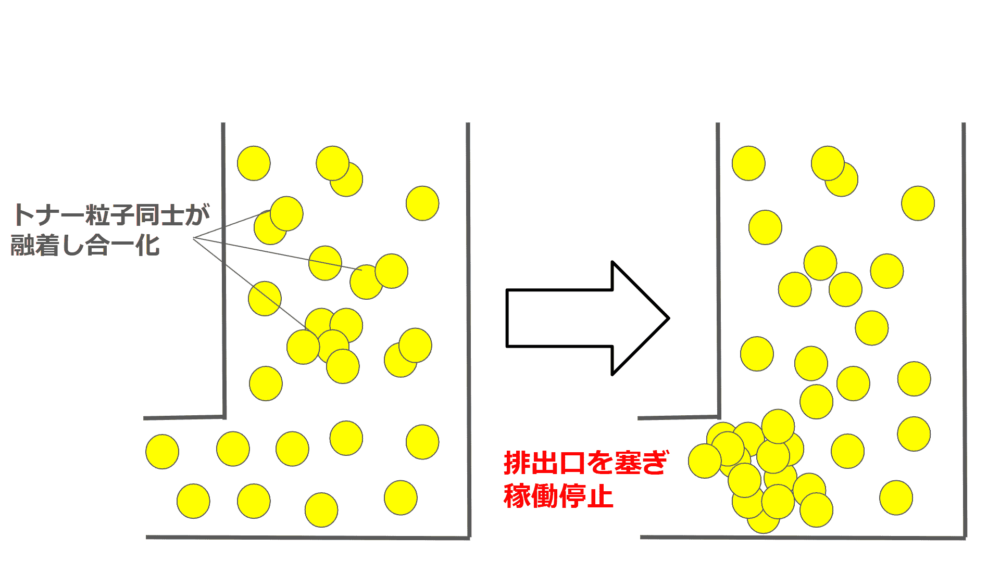

現在の職務
CAEエンジニアとは


CAEエンジニア（Computer Aided Engineeringエンジニア）は、解析ソフトウェアや数値計算手法を用いて様々な事象について解析し、問題の解決を図るエンジニアです。構造解析、流体解析、振動解析など多岐にわたる領域で分析を行い、設計段階での試作品の削減や品質向上に寄与します。
熱球形装置とは
 

熱球形装置は、弊社の特許技術であり、粉末状の材料を高温で処理し、粒子の表面を溶融または半溶融状態にすることで球状化（円滑化）を行う装置です。
主にプリンター用トナーの製造に用いられており、粉末を球状にすることで流動性を高め、粒度分布を均一にし、充てん性を向上させるなど、多面的なメリットを得ることができます。球状化を行う事で、定着性や印刷の安定性が向上するため、印刷用トナーの生産性や品質の向上に大きく寄与します。
JP2022048410A - 熱球形化装置及びトナー製造方法
業務内容

現在、この装置内部で過剰に溶融したトナーが「融着」し、排出口を塞いで装置稼働を低下させる問題が発生しています。私はこの課題を解決するため、CAEシミュレーションを用いて装置内部のトナー流れや温度分布を可視化し、形状最適化に取り組んでいます。